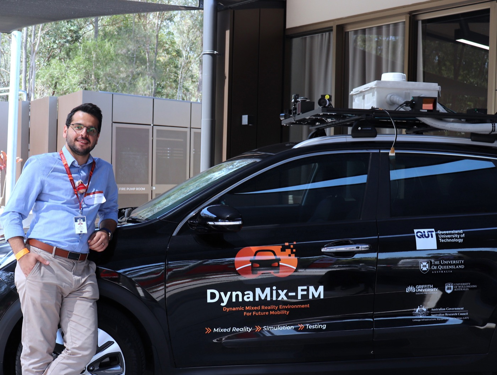
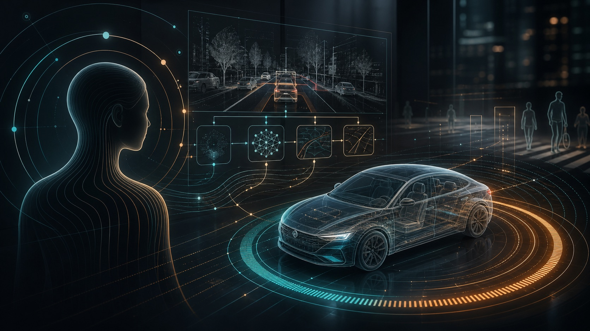
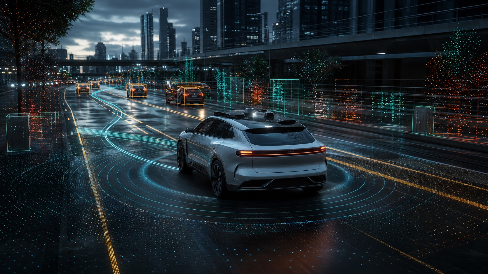
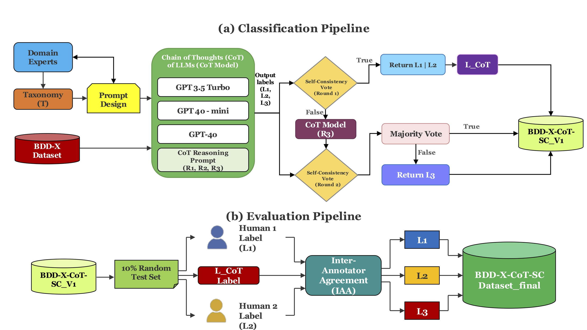
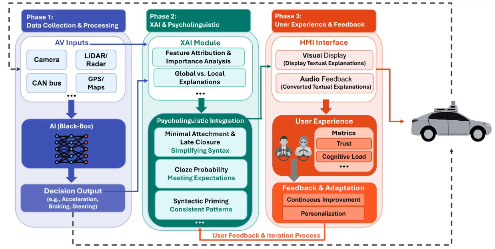
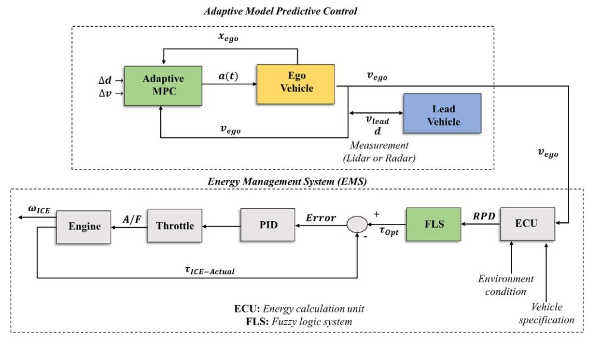
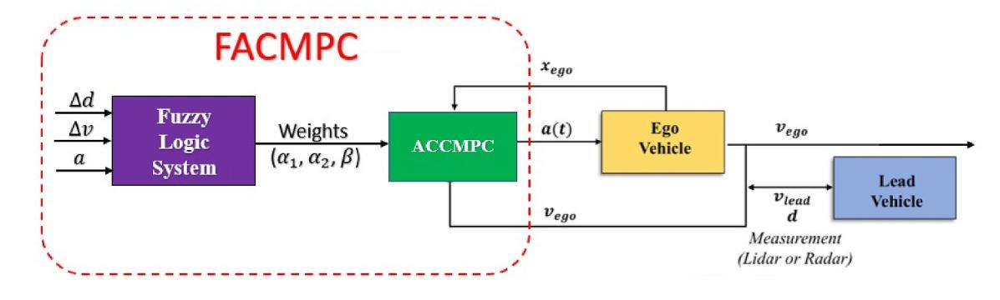

Researcher profile
Ashkan Y. Zadeh
Human-centred XAI, NLP, and automated vehicles.
PhD Candidate at QUT and AVR3
Also published as Ashkan Y. Zadeh
Currently exploring
I research human-centred explainable AI for automated vehicles, with a focus on turning autonomous driving decisions into natural language explanations that people can understand, evaluate, and trust.

Researcher profile
Human-centred XAI, NLP, and automated vehicles.
focus = "Human-Centred XAI"
domain = ["Automated Vehicles", "NLP"]
goal = "Trustworthy autonomous decisions"
Vision, lidar, scene context, and vehicle state.
Model evidence, causal structure, and decision context.
Natural language outputs designed for human understanding.
Human-centred evaluation and calibrated autonomy.
About
I am a PhD Candidate in Computer Science at Queensland University of Technology, affiliated with the ARC Training Centre for Automated Vehicles in Rural and Remote Regions.

My thesis develops a model for generating human-centric explanations for automated vehicles. I connect Human-Centred Artificial Intelligence, Explainable AI, Natural Language Processing, and autonomous driving to improve transparency and trust in safety-critical systems.
I am supervised by Dr. Xiaomeng Li, Prof. Andry Rakotonirainy, Prof. Ronald Schroeter, and Prof. Sebastien Glaser.
Designing explanations around how people interpret, question, and calibrate trust in AV behaviour.
Connecting perception, decision context, and vehicle state to explanation content.
Structuring natural language explanations that are clear, situated, and useful.
Supervision
My doctoral work is supervised by a multidisciplinary team across explainable AI, human-centred transport systems, and automated vehicle research.
Human Behaviour, Experimental Design, Data Analysis.
AVR3 profileHuman-Machine Interaction, Road Safety, Automated Vehicle Design
AVR3 profileIntelligent Transport Systems, Automated Vehicle Design, Safety Deployment.
AVR3 profileResearch Interests
My research interests combine automated vehicle sensing, computer vision, language models, NLP, and human-centred AI into one explanation pipeline.

01Perception, scene understanding, sensor evidence, and driving context as the foundation for meaningful explanations.
Language generation, linguistic building blocks, and structured explanation content for AV decisions.
Explanation design grounded in user needs, transparency, interpretability, and trust calibration.
Connects computer vision, vehicle state, and scene context to explanation-ready evidence.
How should AV decisions be represented, selected, and justified?
Which linguistic choices make explanations clearer and more actionable?
How do explanations affect attention, trust, and behavioural response?
How can explanation models support responsible autonomy in real contexts?
Publications
Recent work across natural language explanations, psycholinguistic XAI design, and intelligent control for automated driving.

Ashkan Yousefi Zadeh, Xiaomeng Li, Andry Rakotonirainy, Ronald Schroeter, Sebastien Glaser, and Z. Zhu.
Read preprint
Ashkan Yousefi Zadeh, Xiaomeng Li, Andry Rakotonirainy, Ronald Schroeter, and Sebastien Glaser.
Read paper
A. Yousefi Zadeh, A. Jamali, R. Mallipeddi, and H. Khayyam.
Read paper
Z. Mehraban, A. Yousefi Zadeh, A. Jamali, R. Mallipeddi, and H. Khayyam.
Read paperExperience
My experience combines doctoral research, engineering education, peer review, and technical committee activity.
IEEE Consumer Technology Society.
IEEE Vehicular Technology Society.
Teaching Computing and Data for Engineers at Queensland University of Technology.
AVR3, formerly CARRS-Q, Queensland University of Technology.
Reviewing for IEEE Transactions on Intelligent Transportation Systems and IEEE Access.
Server-side AI project development, deployment, and debugging at HeyvaAI.
Education and Awards
Computer science doctoral research built on mechanical engineering, dynamics, control systems, and intelligent mobility.
Contact
For research collaboration, XAI, autonomous vehicle explanation design, or academic enquiries, contact me directly.